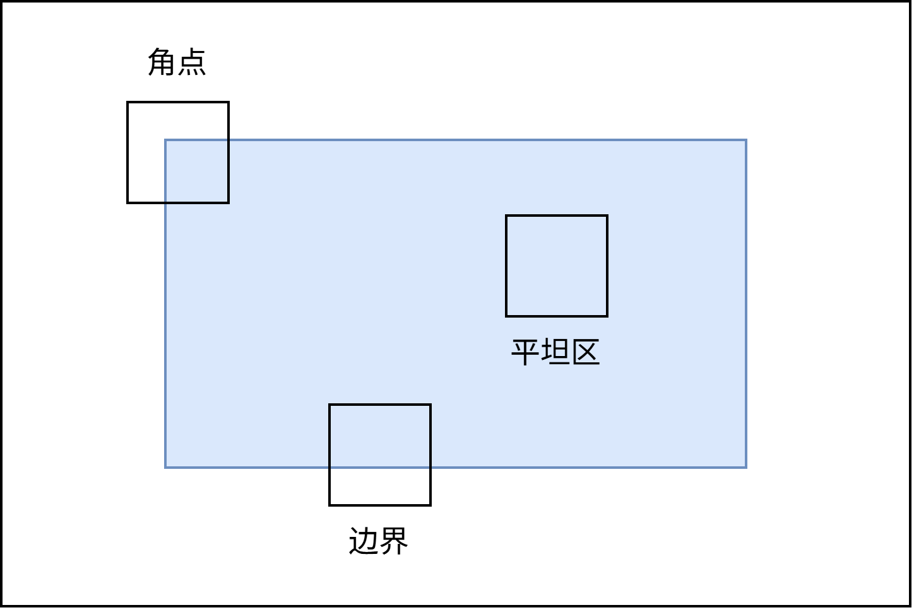
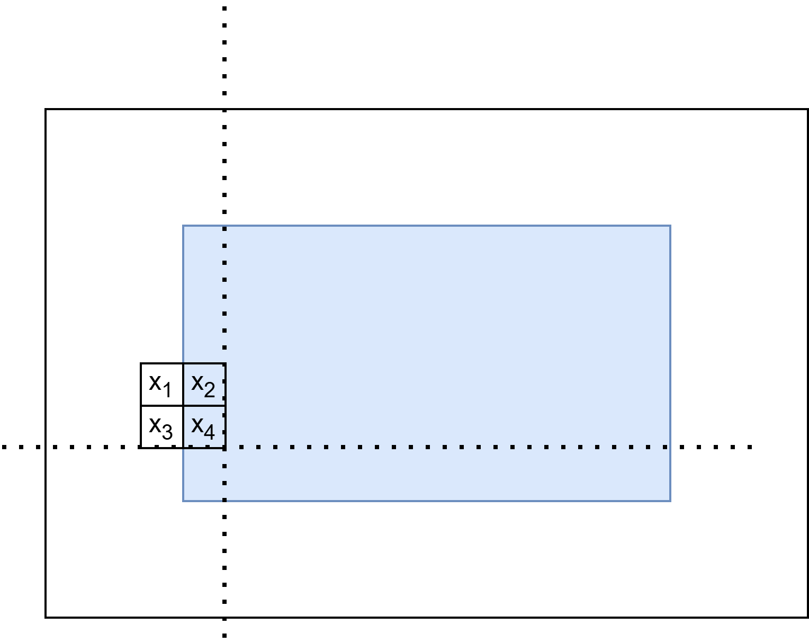
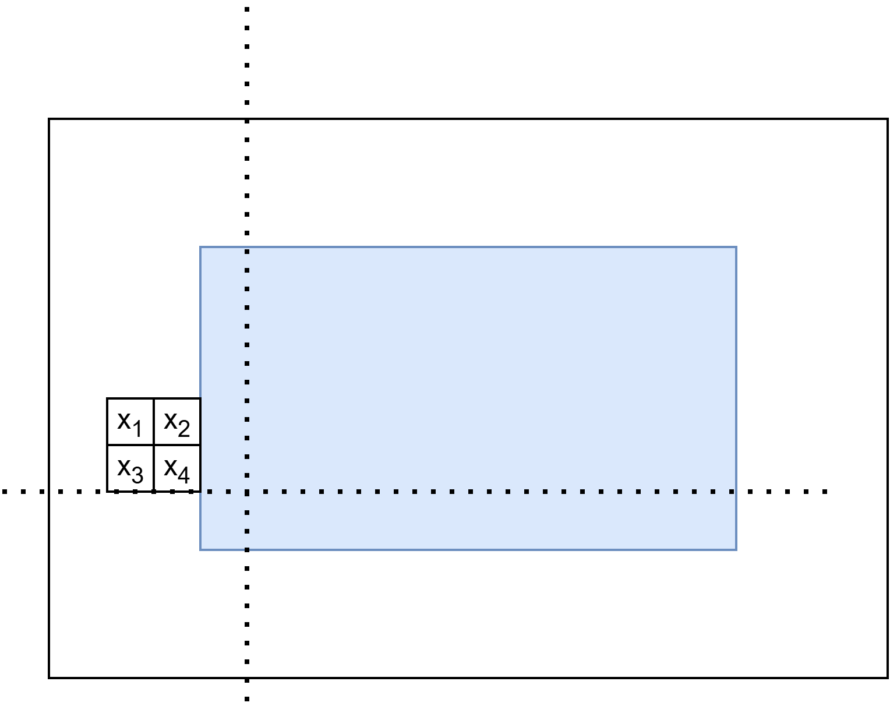
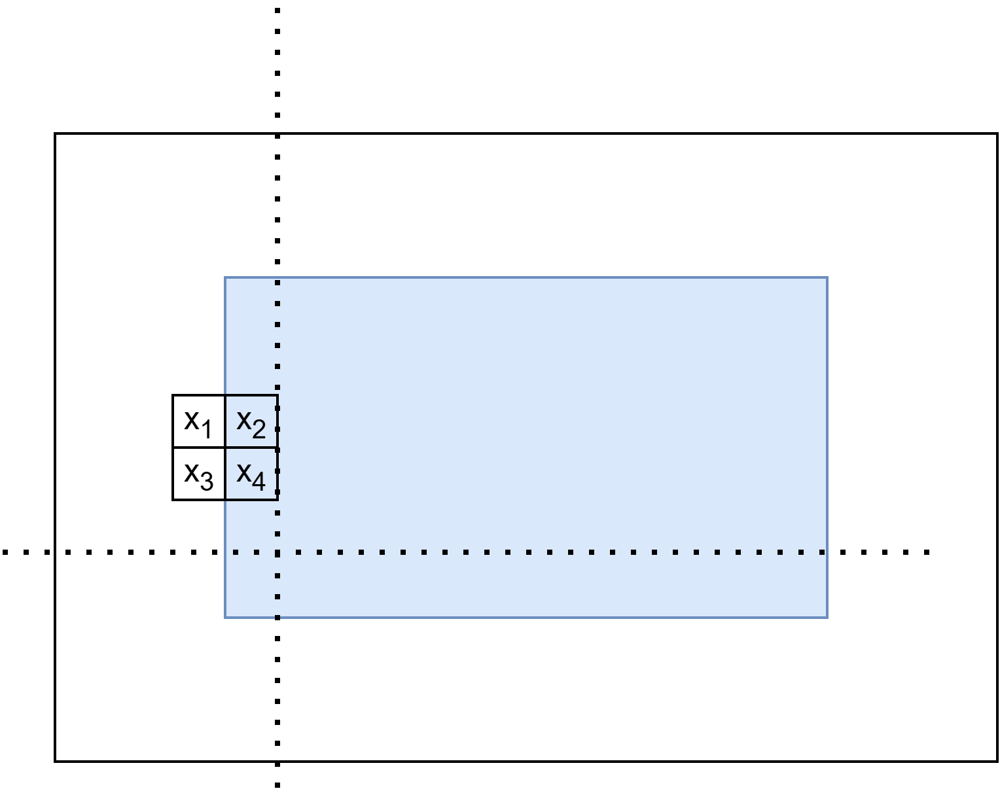
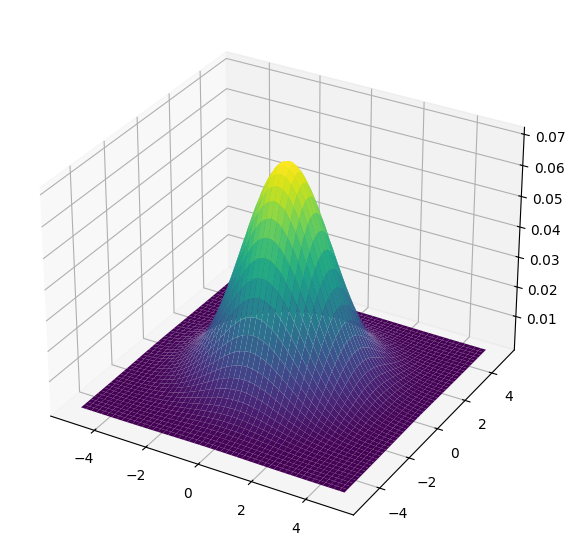
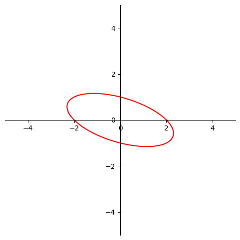
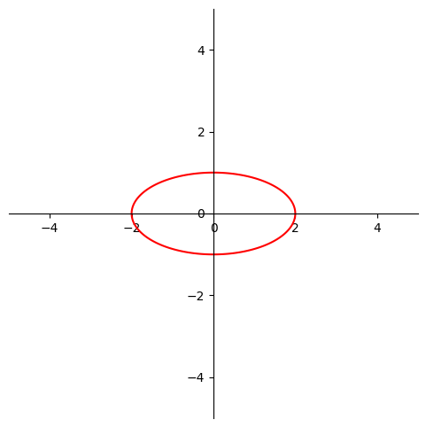
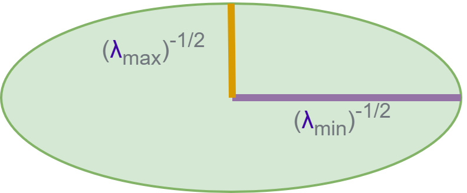
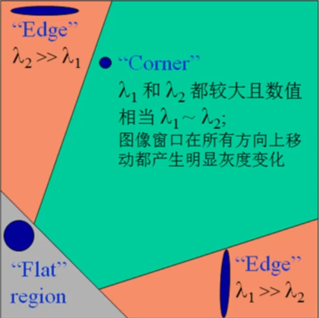
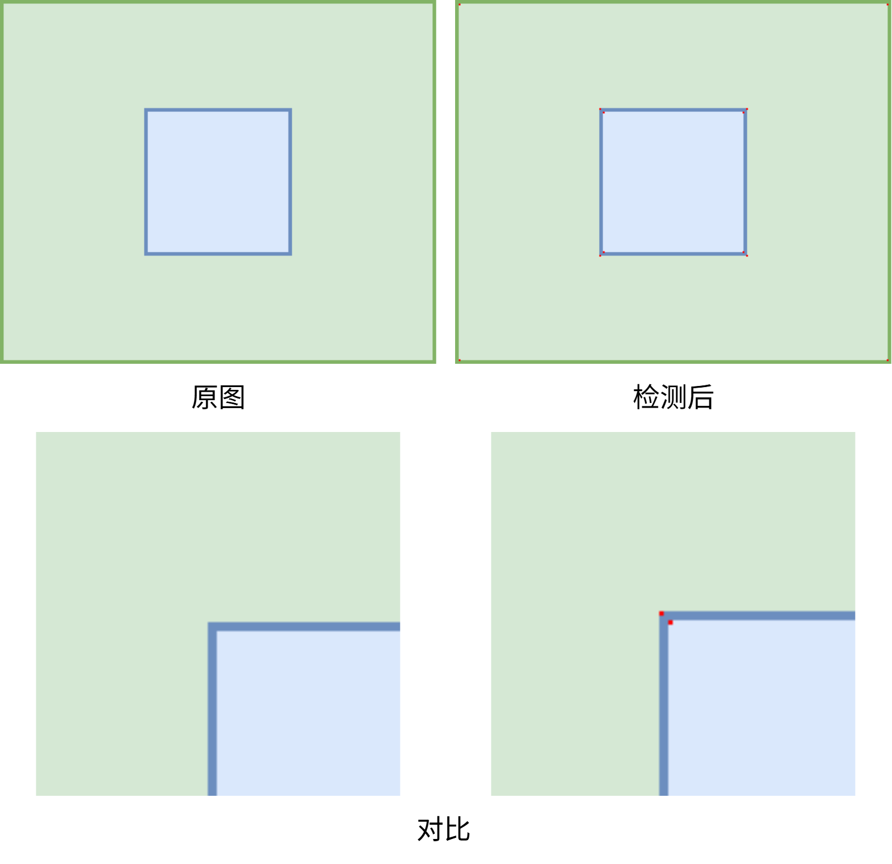

# Harris 兴趣点检测
# 什么是 “兴趣点”
在 Harris 兴趣点检测中，“兴趣点” 通常指图像中那些在水平和垂直两个方向上都具有显著灰度变化的像素点，也就是说在局部窗口在任意方向做小幅平移都会引起较大像素差异的点。这类点往往对应于图像中的角点或局部纹理显著的区域，因此被认为是具有判别性和稳定性的特征点。
- 一大片平坦区域，所有方向都变化小，不是兴趣点
- 高楼顶部的转角处、十字路口的交叉点，在所有方向都变化大这是兴趣点

角点会在两个方向同时产生剧烈变化，边界只会在一个方向上产生剧烈变化，平坦区则都不会。
# 数学原理
# 从上帝视角理解
如何检测本质在于计算窗口滑动前后，其像素的变化情况。

假设一个窗口包含四个像素，那么这里会采集到这四个值：
x1,x2,x3,x4
再次假设，白色部分数值为 0，蓝色部分数值为 1，那么有：
x1=0,x2=1,x3=0,x4=1
水平方向移动：

此时有：
x1=0,x2=0,x3=0,x4=0
数值产生剧烈变化。
垂直方向移动：

$$
x_1=0,x_2=1,x_3=0,x_4=1
$$
数值不变。
噢～这是边界！
如果把这个放在蓝色矩形的左上角呢？可以很轻松的想象到，无论是在水平方向还是垂直方向，数值都会产生剧烈变化。噢～这是角点！
如果把这个放在蓝色矩形的中间呢？可以更很轻松的想象到，无论是在水平方向还是垂直方向，数值都不会产生剧烈变化。噢～这是平坦区！
我们一看就知道，噢，数值产生剧烈变化了，再思考一下我们就知道这是角点还是边界了，那有没有一种数学方法让计算机也知道这是角点还是边界亦或是平坦区呢？
有的兄弟有的，这就是 Harris 兴趣点检测法。
# Harris 检测方法
对于图像I(x,y)，我们可以判断在点(x,y) 处平移(Δx,Δy) 后的自相似性。此处I(x,y) 是一个灰度图像。
有自相似性公式：
c(x,y,Δx,Δy)=(u,v)∈W(x,y)∑W(u,v)(I(u,v)−I(u+Δx,v+Δy))2
其中I(u,v) 是原来的灰度值，I(u+Δx,v+Δy) 是经过平移变换后的灰度值，做减法是为了看看平移操作后其与之前的差异是多大的，有时候我们的灰度变化是上升的，而有时候我们的灰度变化是下降的，我们只关心他变化了多少，因此这里做了平方操作，经过平方后不仅化负为正，还进一步强化了前后的差异。
而W(u,v) 是一个权重设计，在整个窗口中，我们没有必要平等的看待每一个像素（ps：当然也可以平等的看待，此时W(u,v) 每一项均为同一常数），通常我们使用高斯加权函数，在图像上，最常用的是二维版本：
w(x,y)=2πσ21exp(−2σ2x2+y2)
其中(x,y)：相对于窗口中心的坐标，σ 控制模糊程度或者说是影响范围，二维权重的三维表示如图所示：

像图中表示的一样，他将会更加重视窗口中心的元素，一个3×3 的高斯矩阵形如：
⎣⎢⎡121242121⎦⎥⎤
对I(u+Δx,v+Δy) 进行泰勒展开：
I(u+Δx,v+Δy)=I(u,v)+Ix(u,v)Δx+Iy(u,v)Δy+O(Δx2,Δy2)
如此展开到一阶就够用了，丢弃高阶无穷小后，原式近似等于：
I(u+Δx,v+Δy)≈I(u,v)+Ix(u,v)Δx+Iy(u,v)Δy
其中Ix 表示其对x 的偏导，其中Iy 表示其对y 的偏导。
对于原式I(u,v)−I(u+Δx,v+Δy) 我们可以观察到，其包含了I(u,v)，因此可以直接被消掉，于是我们重写c(x,y,Δx,Δy)，近似得到：
c(x,y,Δx,Δy)≈(u,v)∈W(x,y)∑W(u,v)(Ix(u,v)Δx+Iy(u,v)Δy)2
简单起见，我们将∑(u,v)∈W(x,y)W(u,v)，收缩至求和符号中记作：\sum_
进一步，我们可以把上式改写成矩阵的形式，设矩阵M(x,y) 为：
M(x,y)=w∑[Ix(x,y)2Ix(x,y)Iy(x,y)Ix(x,y)Iy(x,y)Iy(x,y)2]=[∑wIx(x,y)2∑wIx(x,y)Iy(x,y)∑wIx(x,y)Iy(x,y)∑wIy(x,y)2]
观察到矩阵的副对角线完全一样，为进一步简化M(x,y)，设A=Ix(x,y)2、B=Ix(x,y)2、C=Ix(x,y)Iy(x,y)，于是得到：
M(x,y)=[ACCB]
显然，M(x,y) 是一个对称阵，因此得到：
c(x,y,Δx,Δy)≈[Δx,Δy]M(x,y)[ΔxΔy]=[Δx,Δy][ACCB][ΔxΔy]
化简可得：
c(x,y,Δx,Δy)≈AΔx2+2CΔxΔy+BΔy2
其中A=∑wIx2，B=∑wIy2，C=∑wIxIy。
这里的AΔx2+2CΔxΔy+BΔy2，非常像椭圆方程，回忆椭圆一般二次型：Ax2+Bxy+Cy2+Dx+Ey+F=0，出现交叉项时，其变为非标准形，形如：

我们需要把整个非标准椭圆做标准化变换。
为什么AΔx2+2CΔxΔy+BΔy2 并不标准，因为这里存在交叉项2CΔxΔy，如果这一项能被消掉那就变成标准的了，最直接的方法就是让C 等于0，此处的C 是由M(x,y) 产生的，观察到M 矩阵是一个实对称矩阵，那么我们就可以对M 进行相似对角化，消掉C，变标准椭圆。

下面假设已经完成了对矩阵M 的形似对角化：
P−1MP∼[λ1λ2]
其中，λ1，λ2，是矩阵M 的特征值，因此可进一步写做：
c(x,y,Δx,Δy)≈[Δx,Δy][ACCB][ΔxΔy]≈[Δx′,Δy′][λ1λ2][Δx′Δy′]=λ1(Δx′)2+λ2(Δy′)2
于是我们可以用λ1,λ2 的大小关系区分平坦、边缘亦或是角点。相似对角化不是为了方便计算，而是为了方便理解 与分类，实际实现 Harris 的时候，基本不会显式去算特征值、特征向量，对角化是为了看清λ1,λ2 的几何意义。
像这样的λ1(Δx′)2+λ2(Δy′)2，我们可以把它改变一下，让其与标准式对齐，得到：
(λ11)2Δx′2+(λ21)2Δy′2
太复杂了，简单点写做：
(λ1−21)2Δx′2+(λ2−21)2Δy′2

现在有三种情况：
- 平坦区域：λ1≈0, λ2≈0（两个都很小）
- 边缘区域：λ1≫0, λ2≈0 或者λ2≫0, λ1≈0（一大一小）
- 角点：λ1≫0, λ2≫0（两个都很大）
然后，使用det(M) 和trace(M) 构造角点响应R 值：
R=det(M)−k⋅trace2(M)
其中det(M) 是矩阵M 的行列式，trace(M) 是矩阵M 的迹，det(M)=λ1λ2，trace(M)=λ1+λ2，这就是 Harris 设计出来的一个角点评分公式。
进一步重述上述三种情况：
- 平坦区域：λ1≈0, λ2≈0（两个都很小），det=λ1λ2≈0，trace2≈0⇒(R≈0)
- 边缘区域：λ1≫0, λ2≈0 或者λ2≫0, λ1≈0（一大一小），det=λ1λ2 不算大，trace2=(λ1+λ2)2≈λ12 很大，$⇒ R $ 往往是负的（这里 Harris 故意用 $-k \cdot \text {trace}^2 $ 把边缘压下去）
- 角点：λ1≫0, λ2≫0（两个都很大），det=λ1λ2 很大，即便减去了k(λ1+λ2)2，但整体还是会是个比较大的正数

综上所述，R 有如下特性：
- R≈0 ⇒ 平坦区
- R<0 ⇒ 更像边缘
- R≫0 ⇒ 很像角点（兴趣点）
det(M) 大，就说明两个方向上变化都大，trace(M)2 大，可能只是有一个方向特别大，比如边缘，R=det−k⋅trace2，用 det 奖励两个方向都大的情况，用 −ktrace2 惩罚只有一个方向大、另一个方向小的情况。
# 在 OpenCV 中的使用
| import cv2 |
| img = cv2.imread('1.jpg') |
| gray = cv2.cvtColor(img, cv2.COLOR_BGR2GRAY) |
| dst = cv2.cornerHarris(gray, 2, 3, 0.04) |
| img[dst > 0.1 * dst.max()]=[0, 0, 255] |
| cv2.imshow('dst', img) |
| cv2.imwrite('1_corner.png', img) |
| cv2.waitKey(0) |
| cv2.destroyAllWindows() |
- blockSize=2 是窗口大小
- ksize =3 是 Sobel 求导算子核大小，Harris 需要先算图像在 x，y 方向的梯度 Ix,Iy，OpenCV 用的是 Sobel 算子。
- k = 0.04 是 Harris 公式里的经验参数 k，R=det(M)−k⋅trace2(M)
# 对比
# 简单场景

# 复杂场景
# 参考
[1] Harris C G, Stephens M. A combined corner and edge detector[C] Alvey vision conference. 1988, 15(50): 10-5244.
[2] Harris 角点检测与 SIFT 特征匹配全解析 https://www.bilibili.com/video/BV1Zi1eYLEiR
[3] Harris Corner Detection https://docs.opencv.org/4.x/dc/d0d/tutorial_py_features_harris.html
[4] Harris corner detector https://en.wikipedia.org/wiki/Harris_corner_detector?utm_source=chatgpt.com